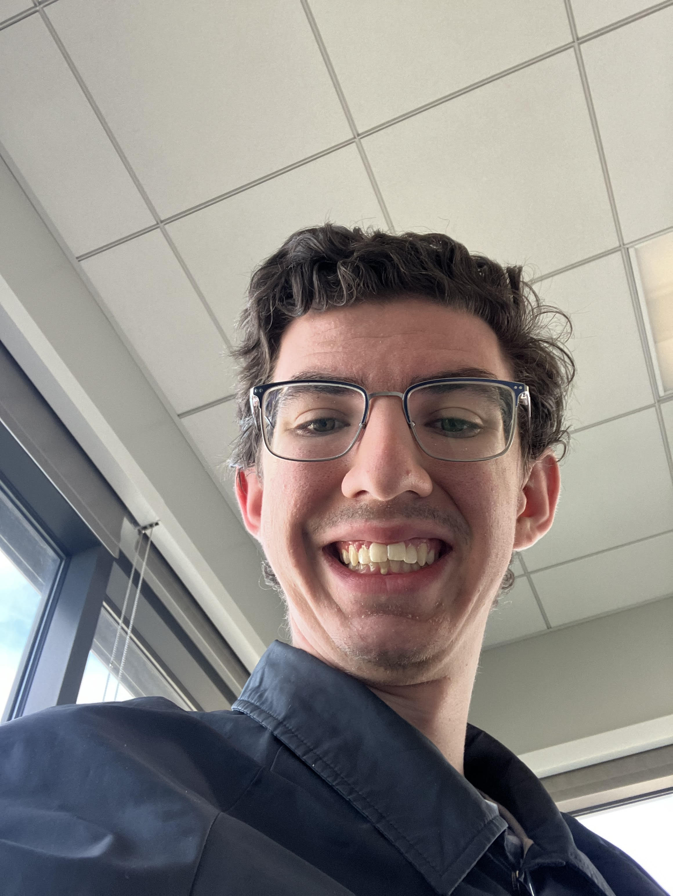

Cody Bohman
My name is Cody Bohman. I am 22 years old and I am from Mesa, Arizona. I am a CIT, or Computer information technology major. My hobbies include video games, reading, and math.
I enjoy learning about science and philosiphy. I am interested in chemistry and computers, which is whyI chose the major I did. I have lived in Rexburg for about 2 years.